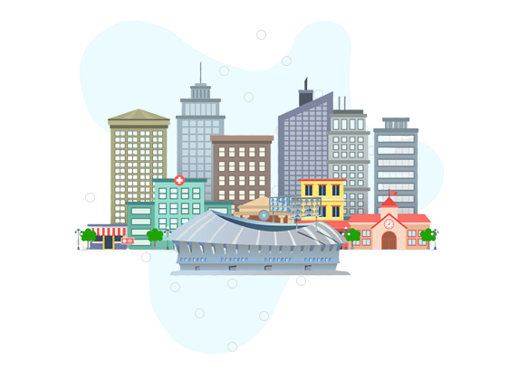

FinTech
Malta is renowned as a 'Blockchain Island', attracting a host of FinTech startups. With a robust regulatory framework and a highly skilled workforce, Malta presents an ideal setting for FinTech startups.
iGaming
As a pioneer in regulating online gaming, Malta boasts a vibrant iGaming industry. Startups can leverage Malta's experienced talent pool and strong legal frameworks to thrive in this sector.


HealthTech and BioTech
With Malta's commitment to healthcare and its strategic geographical location, startups in HealthTech and BioTech can find lucrative opportunities and a supportive ecosystem.
Information & Communications Technology (ICT)
With the country's strong focus on ICT, Malta offers a technologically advanced infrastructure, perfect for ICT startups.


Maritime and Logistics
As an island nation, Malta has a longstanding maritime tradition. Startups in the maritime and logistics sector can capitalize on Malta's strategic location and excellent port facilities.
Sustainable Energy and Environment
With its abundance of sunlight and a national commitment to sustainability, Malta provides an innovative platform for startups focusing on renewable energy and environmental technologies.


Tourism and Hospitality Tech
Given the prominence of tourism in Malta, there is a growing demand for tech solutions in the hospitality industry. Tourism tech startups can find a rich testing ground and a receptive audience in Malta.
Blue Economy
Malta's blue economy provides a fertile ground for agritech startups to introduce sustainable farming technologies and leverage the island's unique climate and marine resources. With a supportive startup ecosystem, these startups can drive innovation, address food security challenges, and contribute to the sustainable growth of Malta's agricultural sector within the blue economy.

Agritech and FoodTech
Given the prominence of tourism in Malta, there is a growing demand for tech solutions in the hospitality industry. Tourism tech startups can find a rich testing ground and a receptive audience in Malta.
FoodTech startups are disrupting the food industry with advancements in agri-tech, food delivery platforms, meal kits, vertical farming, food waste reduction, and alternative protein sources.
EdTech (Education Technology)
EdTech startups are disrupting traditional education models through online learning platforms, virtual classrooms, adaptive learning tools, educational apps, and personalized learning experiences.
SaaS (Software as a Service)
SaaS startups are offering cloud-based software solutions to businesses, providing cost-effective and scalable alternatives to traditional software models.
AI and Machine Learning
Startups in the AI and machine learning space are developing intelligent systems and algorithms to automate processes, enhance decision-making, and improve efficiency across various industries.
E-commerce and RetailTech
SWith the rise of online shopping, e-commerce startups are driving innovation in the retail industry, including mobile commerce, omnichannel experiences, personalized recommendations, and logistics solutions.
Mobility and Transportation
Startups in this space are driving innovation in transportation with electric vehicles, ride-sharing platforms, autonomous vehicles, smart city solutions, and mobility-as-a-service concepts.

With our expert guidance and the dynamic Maltese startup ecosystem, we can help startups across these sectors to launch and thrive.